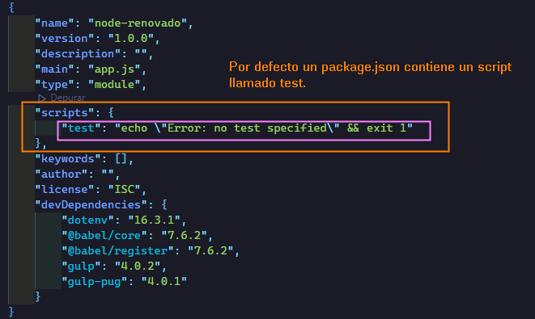
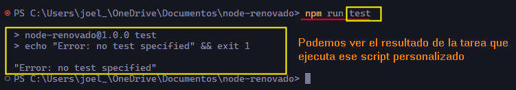
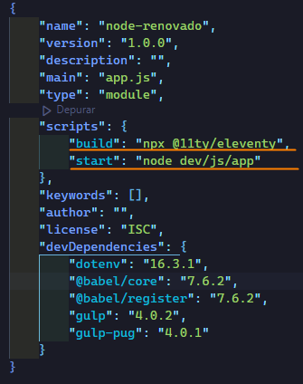
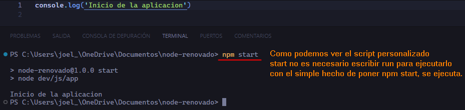
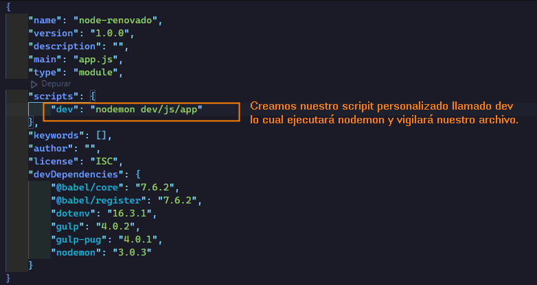
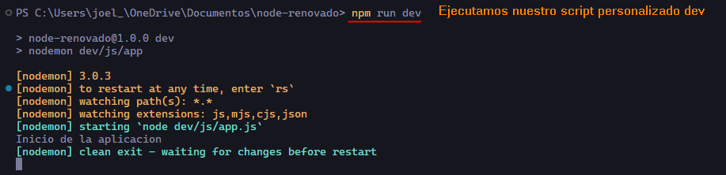
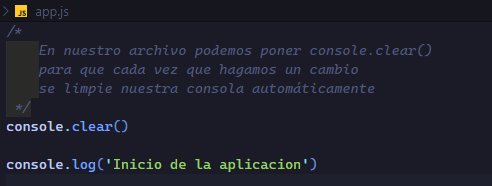

En un archivo package.json en Node.js, la sección de "scripts" nos permite definir comandos personalizados que podemos ejecutar utilizando el comando npm run o yarn run. Estos scripts son útiles para automatizar tareas comunes relacionadas con el desarrollo, como la ejecución de pruebas, la compilación de código, el inicio de servidores locales, entre otras cosas.
Veamos nuestro package.json

Para poder ejecutar ese script personalizado, en nuestra línea de comandos necesitamos escribir:
npm run (NombreScript) en nuestro caso test y nos devolverá el resultado de la tarea que ejecuta ese script.

Ahora que ya sabemos lo que es un script personalizado veamos otros scripts personalizados que son un estandar en nodeJs.

"build": El script "build" se utiliza comúnmente para automatizar el proceso de construcción del proyecto. Este proceso puede incluir la compilación de código fuente, la minificación de archivos, la transpilación de TypeScript a JavaScript, entre otras tareas. En general, el resultado del script "build" es la preparación del código para su implementación en un entorno de producción.
Ejemplo: "npx @11ty/eleventy" seria para levantar el código de producción de eleventy (SSG)
"start": El script "start" se utiliza típicamente para iniciar la aplicación o el servidor localmente durante el desarrollo. Este script suele ser usado para lanzar el servidor de desarrollo, cargar la aplicación en un entorno local y permitir que los desarrolladores realicen pruebas mientras trabajan en el código fuente.
Ejemplo: "start": "node index.js" podría ser un script que inicia la aplicación ejecutando el archivo index.js con Node.js, en nuestro ejemplo el script que inicia la applicacion la tenemos en otra ruta y se llama app.js que es otro nombre que suele remplazar a index.js
Algunas herramientas y plataformas, como servicios de alojamiento en la nube, pueden reconocer automáticamente estos nombres y ejecutar ciertos scripts durante despliegues o integración continua.
En nodeJs es muy común el script personalizado
start que ya es una convención y es de los pocos scripts personalizados que se pueden correr sin la palabra run con el simple hecho de poner npm start ejecutaria el script personalizado start.

nodemon
Reinicia automáticamente la aplicación cuando detecta cambios en el código fuente. A diferencia de ejecutar tu aplicación con el comando node, que requeriría que manualmente detengas y vuelvas a ejecutar la aplicación cada vez que realizas cambios en el código, nodemon automatiza este proceso para hacer que el desarrollo sea más eficiente.
Algunas características clave de nodemon incluyen:
Reinicio automático: nodemon monitorea los archivos en tu proyecto y reinicia automáticamente la aplicación cuando detecta cambios. Esto significa que puedes ver los efectos de tus modificaciones en tiempo real sin tener que reiniciar manualmente el servidor.
Compatibilidad con múltiples archivos y directorios: nodemon puede monitorear múltiples archivos y directorios en tu proyecto, permitiéndote reiniciar la aplicación cuando se realizan cambios en cualquiera de ellos.
Configuración fácil: Puedes configurar nodemon mediante un archivo de configuración (nodemon.json) o utilizando opciones en la línea de comandos para ajustar su comportamiento según las necesidades específicas de tu proyecto.
Integración con entornos de desarrollo: nodemon es ampliamente utilizado en entornos de desarrollo y es compatible con muchos marcos y bibliotecas de Node.js. Puede ser utilizado con aplicaciones Express, Koa, Hapi, entre otros.
Para usar nodemon, primero debes instalarlo globalmente o como dependencia de desarrollo en tu proyecto,lo más recomendable es instalarlo como dependencia de desarrollo:
npm install -g nodemon
npm install nodemon -D
Después de la instalación, puedes ejecutar tu aplicación con nodemon en lugar de node:
nodemon tu-archivo-de-app.js
Pero no serviria si de todas formas tenemos que estar escribiendo en nuestra línea de comandos a cada rato nodemon tu-archivo-de-app.js
Para que nuestro observador cheque automáticamente los cambios y no tengamos que estar escribiendo en nuestra línea de comandos podemos crear nuestro script personalizado para asi solo ejecutar una vez nuestro script y así nodemon se quede vigilando nuestro archivo.

De esta manera ya se queda vigilando cualquier cambio de nuestro archivo y ya no tenemos que estar volviendo a ejecutar en nuestra línea de comandos el comando para volver a levantar nuestra aplicación.

Alternativa a nodemon --watch
Es el más recomendado ya que al contrario de nodemon,--watch es un observador nátivo y por ende es más rapido, un contra es que no tiene tanta configuración como nodemon que podemos vigilar varios archivos al mismo tiempo.
Para poder ejecutar nuestro observador tenemos que poner lo siguiente en nuestra línea de comandos